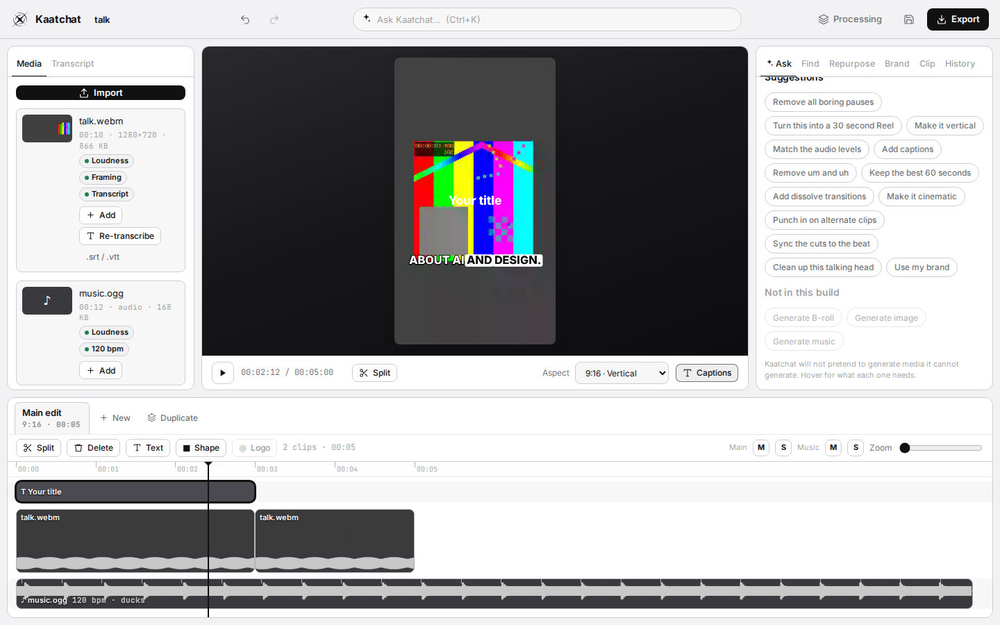
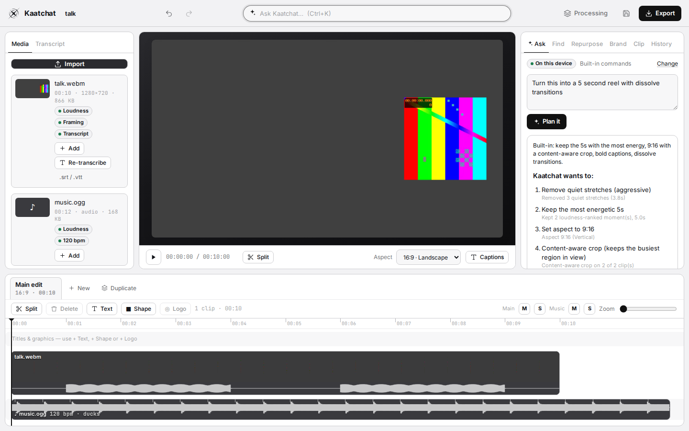

Ask for the edit
“Remove the pauses.” “Make it 9:16.” “Sync the cuts to the beat.” The assistant turns plain requests into a plan of edit commands. Kaatchat checks every step, shows you what will change, and applies it as one undo.
Talk to your footage
Kaatchat is a video editor with an assistant built in. Ask for what you want — “turn this into a 30-second Reel” — and it proposes an edit you can preview, change or undo. Your footage is processed on your own machine.
Free · MPL-2.0 open source · No account · No uploads

“Remove the pauses.” “Make it 9:16.” “Sync the cuts to the beat.” The assistant turns plain requests into a plan of edit commands. Kaatchat checks every step, shows you what will change, and applies it as one undo.
Find every time you mention money, AI or a product. Get timestamped moments, preview them, then keep them, cut them, or make them a new sequence.
Pick 3, 5 or 8 clips from a long video — by topic or by measured energy — and get a separate, fully editable Reel or Short for each: tightened, reframed to 9:16 and captioned. Export them all in one go.
Transcribe locally with Whisper, or bring an .srt/.vtt. Select words and delete them to cut the video. Remove “um” and “uh” in one click. Captions follow the edit.
Silence removal, smart cuts, loudness matching to −18 dBFS and a content-aware reframe that keeps the busiest part of the frame in view. Every number comes from your footage.
Beat detection with a confidence score, cuts nudged onto the beat, music that ducks under speech, fades, mute and solo.
Text, shapes and logos with keyframes and easing; pop, typewriter, kinetic and slide presets; dissolve, fade, slide, zoom, blur and whip transitions; looks from clean to black-and-white.
One command cleans up pauses, fillers and levels, adds punch-ins and captions. Switch to a second camera — lined up by sound, so words stay in sync.
Logo, colours, your own font, caption style, lower third, watermark, intro and outro. Say “use my brand” and it goes on every sequence.


The assistant works offline with built-in commands. For open-ended requests, connect your own key for Google Gemini, OpenAI or Anthropic Claude, or a local model server. Keys stay in your operating system’s keychain on desktop. Consumer subscriptions do not include API access.
Kaatchat will not pretend to do what it cannot. This release does not generate images, video, B-roll or music, does not do colour grading beyond its looks, and does not label speakers automatically. Those are later, if they can be done well.
Windows 10/11, 64-bit.
The Windows installer is published on GitHub Releases after every tagged build passes its tests. This page links it once a release exists.
Chrome, Edge or another Chromium browser with WebCodecs.
Open the web appThe web app link appears here once it is deployed.
macOS and Linux builds are planned; the editor already runs in the browser on both.